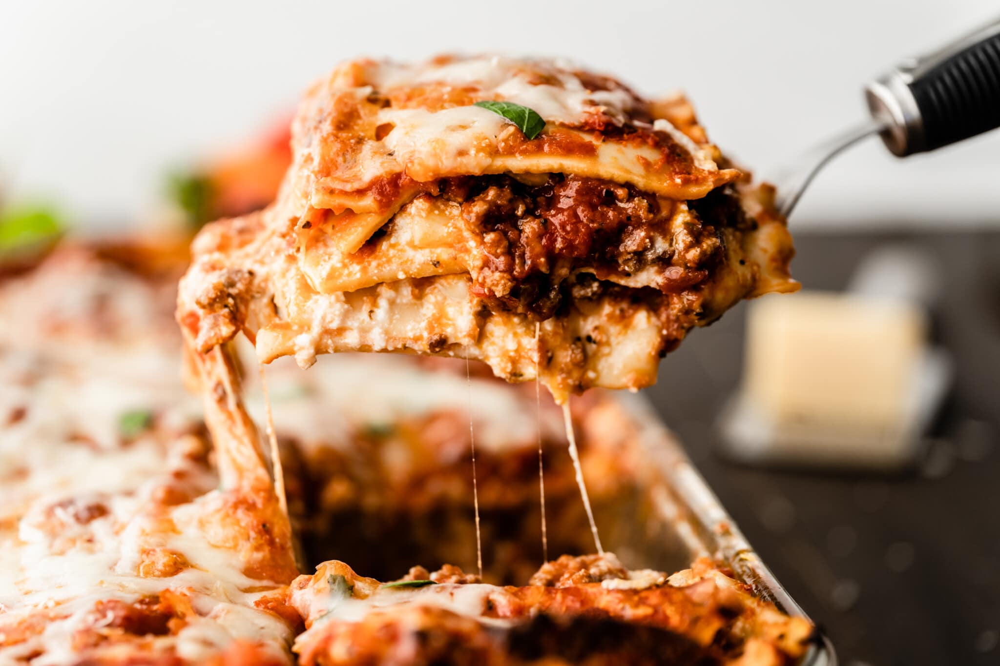
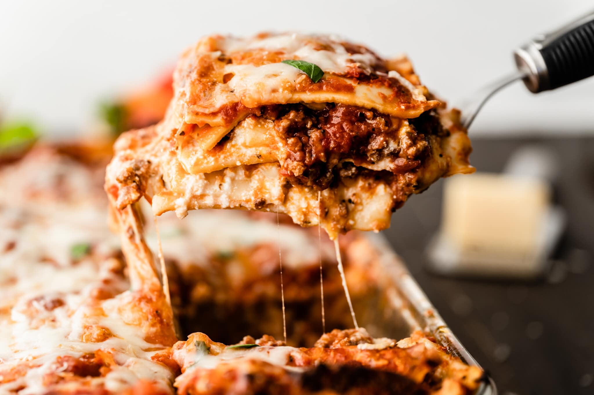

Meat Lasagna
Classic easy meat lasagna is the ultimate Italian comfort food that we all know and love. Layers of tender lasagna, meaty tomato sauce, a creamy cheese filling, with extra melted cheese on top, and a perfect, crispy crackly crust. It's super easy to make this delicious and comforting meal, can be make it ahead of time, and freezes beautifully.
Approximate Preparation Time: 25min
Cook Time: 1hr
13 Ingredient. Allergic Reaction: Glutten.
413 Calories Per Serving
Ingredient
-
1/2 pound lean ground beef
-
1/2 pound Italian sausage, casing removed
-
2 jars (26 ounces each) spaghetti sauce, divided
-
2 eggs
-
2 eggs
-
2 containers (15 ounces each) ricotta cheese
-
1 package (8 ounces) shredded mozzarella cheese, (2 cups), divided
-
1 teaspoon garlic powder
-
1 teaspoon parsley flakes
-
1 teaspoon italian seasoning
-
2 teaspoon salt
-
1/4 teaspoon black pepper
-
9 lasagna noodles, uncooked
-
1/4 cup grated Parmesan cheese
Instructions
-
1 Preheat oven to 350°F. Brown ground beef and sausage in large skillet on medium heat; stirring occasionally. Drain fat. Stir 4 cups spaghetti sauce into meat mixture. Reserve remaining spaghetti sauce for serving.
-
2 Beat eggs in large bowl. Add ricotta cheese, 1 1/2 cups of the mozzarella cheese, garlic powder, Italian seasoning, parsley, salt and pepper; mix well.
-
3 Spread about 1 cup of the meat sauce onto the bottom of 13x9-inch baking dish; top with 3 noodles. Spread half of the cheese mixture over the noodles. Repeat meat sauce, noodles and cheese layer once. Top with remaining noodles and meat sauce, making sure to cover noodles with sauce. Sprinkle with remaining 1/2 cup mozzarella cheese and Parmesan cheese. Cover with foil.
-
4 Bake 45 minutes. Remove foil. Bake 15 minutes longer or until noodles are tender. Let stand 15 minutes before cutting. Serve with reserved spaghetti sauce.
Source: Beef Lasagna Recipe | McCormick
Storage Instruction: Place the food in resealable container. It can last for 3-4 days. Reheat with micro-wave for 2-3 minutes or 350'F oven for 15 minutes would work.
Sample Image

 


Recipe Website
-
Beef Lasagna Recipe | McCormick. This website has clear instruction and layout to help you understand how to cook the recipe.
-
allrecipes. This website includes video to help illustrate the process.
-
allrecipes. This website is good because it also has instructions on how to reheat the food and pre-prepare it to have best taste.
Design Website
-
Wix. This website has good picture layout that I think I can learn.
-
Dopplerpress. This website includes interesting animation that makes me want to know more about it.
-
Danielaristizabal. This website is really good in its way of showing the images in motion. Really interesting to see.